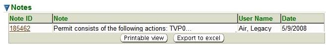
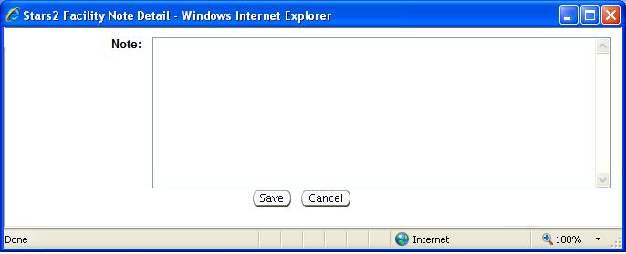
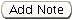
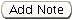

Previous Topic
Next Topic
| Common User Interface Elements |
Previous Topic |
Next Topic |
Many screens within the system provide the capability to associate Notes with the object or operation on the screen. You may want to use Notes, for example, to add additional information about rule applicability for a permit, or to record a conversation you have with a representative of a facility. The system also produces Notes to record certain actions, for example Self-Assignment of a Workflow Task generates a note for the workflow.
Notes are presented in a similar manner throughout the system with respect to appearance and operation. Notes always appear in a collapsible screen region labeled Notes. It is often, but not always near the bottom of the page, just above the operations buttons. Notes capability is only available on the internal system. External users have no access (viewing or editing) to the internal Notes associated with their facilities, applications, permits, etc. However, Notes stored in the system are considered public records.
This page describes the traits and operations related to Notes capability in the system. It covers the following topics:
The list of Notes related to the subject of a page appears in a datagrid with standard datagrid functionality, including the ability to display the contents of the Notes list in a printable format and/or to export the Notes list to Excel.
The Notes region of a detail page, for example the Facility Detail page, looks like this:

Notes Example: Notes on the Permit Detail Page

Expanded Note Text Pop-up
 and
and  buttons. You may modify the
note text here. However, if the note's original author was not you, then the text will not be
editable, and the system will offer only a
button.
Back to Top
buttons. You may modify the
note text here. However, if the note's original author was not you, then the text will not be
editable, and the system will offer only a
button.
Back to TopTo add a note to any object that supports Notes,
simply click on the  or  button at the bottom
of the Notes datagrid, which you may
find in one of two places.
For objects without third-level menus, such as Applications
and Emissions Inventories,
the button appears
at the bottom of the Notes datagrid
on the detail page for the object. (In some cases, you may have to select
or  button at the bottom
of the Notes datagrid, which you may
find in one of two places.
For objects without third-level menus, such as Applications
and Emissions Inventories,
the button appears
at the bottom of the Notes datagrid
on the detail page for the object. (In some cases, you may have to select  on the
Detail Page in order to see the button.) For
objects that have third-level menus, for example Facilities
and Permits, you can access
the button by selecting the Notes
item on that menu. This brings up a Notes page where the
Notes datagrid will
provide the button you need in order to add a note to the system.
on the
Detail Page in order to see the button.) For
objects that have third-level menus, for example Facilities
and Permits, you can access
the button by selecting the Notes
item on that menu. This brings up a Notes page where the
Notes datagrid will
provide the button you need in order to add a note to the system.
In all of these cases, once the system presents the pop-up, you can enter your
note text in the box labeled Note. Then, click
to preserve
your new note, or
to return to the previous page without saving your changes.